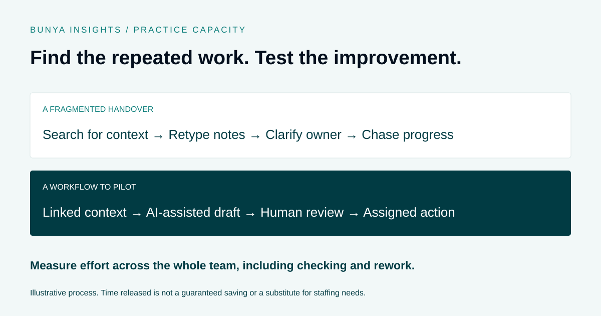

Practice operations
How Financial Advisers Can Reduce Admin and Increase Capacity
Understand the work consuming capacity before choosing what to change.

Find the repeated effort
Ask the team where it enters the same information twice, searches for documents or waits for someone to clarify the next step. Look for recurring patterns rather than isolated frustrations.
Choose a workflow and measure the work involved across every role. A faster adviser step is not a gain if it simply creates more checking for the support team.
Standardise before automating
Define the inputs, expected output, owner and completion criteria. If the process changes each time, first understand which differences are necessary.
Automation can then support predictable steps. Keep a route for exceptions and assign responsibility for checking that the workflow continues to operate as intended.
Use AI where preparation is repeatable
Drafting summaries, organising source material and preparing follow-up can be candidates for AI assistance. The available capabilities and review points need to be agreed for each use case.
Compare the time saved with the effort spent checking and correcting outputs. Begin with a controlled pilot and use the team’s experience to decide whether to expand.
Make staffing decisions from the results
Track turnaround time, overdue work, rework and the team’s experience alongside volume. Improvements should support service quality rather than simply increasing the number of tasks assigned.
Some growth still requires more people or different expertise. A clearer operating process helps you understand where those roles are needed and what work the system can support.
A worked example: meeting follow-up across two roles
Imagine an adviser writes meeting notes, emails an administrator and later checks whether the next task was created. The administrator searches for missing context before preparing a follow-up. This is an illustrative process, not a customer result.
- Observe the existing handover. Record the steps taken by both people, including clarification, searching and corrections. Separate active work from time spent waiting.
- Define the expected result. Agree where the notes belong, who checks the follow-up and what information is needed to assign the next action.
- Pilot a connected process. For eligible meetings, use linked context and an AI-assisted draft. Keep review and authorisation with the responsible person.
- Measure the whole task. Count preparation, checking and correction effort across both roles. Record any missing actions or inaccurate outputs.
- Decide what to change. If the process reduces repeated effort without weakening quality, consider extending the pilot. If checking becomes harder, address that before expanding.
In Bunya, the relevant Voice outputs, Command Centre tasks and connections depend on the agreed scope. A pilot should test the actual configuration your team will use.
What should a capacity pilot measure?
| Measure | What it helps reveal |
|---|---|
| Active effort by role | Whether work is reduced overall or simply transferred to another person. |
| Elapsed time | How long the task waits between starting and completing. |
| Correction cycles | Whether a faster first draft creates more rework. |
| Missing or incorrect items | Whether quality is maintained alongside speed. |
| Exception frequency | How often a person needs to intervene outside the normal process. |
| Team adoption | Whether people can use the workflow without reverting to parallel records. |
Use similar task types and account for differences in complexity. Keep setup and training effort visible rather than excluding it from the decision.
A simple way to estimate released time
For a defined task, subtract the total active effort after the change from the total active effort before it. Include everyone involved and the time spent checking and correcting.
Illustrative calculation: if a task takes 45 minutes across the team before the change and 35 minutes afterwards, the difference is 10 minutes. At 24 comparable tasks in a month, that is 240 minutes, or four hours of potential capacity.
These are hypothetical figures, not Bunya performance data. Subtract any additional ongoing administration, and assess setup and training separately. Four hours spread across several people may not create four usable hours in one person’s diary. Released time also does not automatically become cash savings or additional revenue.
A checklist for choosing your first workflow
- Does the task recur often enough to observe more than one example?
- Can the team describe its inputs, owner and completion criteria?
- Is there repeated searching, re-entry or clarification?
- Can you obtain a baseline across all involved roles?
- Is a responsible person available to review outputs and exceptions?
- Can the pilot run within agreed permissions and service requirements?
- Have you defined what would justify expanding, changing or stopping it?
Start with one manageable process. A specific handover is easier to evaluate than a broad ambition to “automate administration”.
Common questions
Does improving capacity mean we will not need to hire?
No. Growth, service requirements and specialist work may still require additional people. A clearer process helps identify where their time and expertise are most needed.
Should every repeated task use AI?
No. Some tasks benefit from clearer responsibilities or a standard automation. AI is one option for defined preparation work, with review effort included in the evaluation.
How do we avoid shifting work to the support team?
Measure effort by role and follow the task through to completion. Include the people who receive the output in the design and review of the pilot.
Where does Bunya fit?
Command Centre supports client work and handovers, while Bunya Voice can support eligible meeting preparation and follow-up. Your Blueprint defines the capabilities and connections to test. Explore the Blueprint process ↗